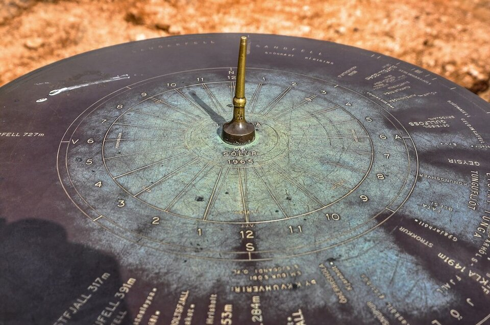

Trusted by thousands of callers nationwide
Astrology Compatibility Reading by Phone — Are You Two Written in the Stars? 24/7
An astrology compatibility reading compares both charts to show exactly where you flow and where you grind. Every astrologer on our line is hand-vetted by our master psychics — connect in under 60 seconds. Your first minute is $1 and you can hang up anytime.
- Hand-vetted readers
- Available 24/7
- Hang up anytime
Call and speak with a live astrologer for an astrology compatibility reading that goes far past "are our signs a match" into how the two of you actually work together. No appointment, no waiting — first-time callers get an introductory rate of $1 per minute, or 15 minutes for $10, and you can hang up the moment you have your answer.

What Is an Astrology Compatibility Reading?
An astrology compatibility reading — astrologers call it synastry — lays your birth chart and your partner's side by side and reads how the two sets of energy interact. Where do your charts support each other? Where do they trigger each other? What does each of you instinctively need to feel loved, and do those needs collide or click? It's the difference between a one-line "Leo and Aquarius — interesting" and a real map of your dynamic, built from both full charts.
Is Compatibility Just About Sun Signs?
No — and this is the single biggest misconception. Sun-sign matching is the cover of the book, not the story. A real compatibility reading weighs the Moon (emotional needs), Venus (how you love), Mars (desire and conflict style), the rising signs, the houses each person's planets fall into for the other, and the aspects between the two charts. Two "incompatible" Sun signs can have a beautifully woven synastry; two "perfect" ones can grind. The full picture is what tells the truth.
How Does an Astrology Compatibility Reading Work by Phone?
Your astrologer calculates both charts from the birth details you provide and compares them live with you on the line. Synastry doesn't need anyone in the room — the charts speak from anywhere. You give the date, time, and place of birth for each person, your astrologer overlays the wheels, and walks you through the connections, the tensions, and what they mean for the relationship.
What Birth Details Do I Need for Both People?
For the sharpest synastry, you want three things for each person:
Date of birth
Sets the Sun, Venus, Mars, and core placements.
Time of birth
Unlocks the Moon's exact degree, rising sign, and house overlays.
Place of birth
Anchors each chart to a location and time zone.
Don't have your partner's birth time? You'll still get a strong reading — your astrologer can read a great deal from the dates and places and flag what would sharpen with a time.
Who Is the Best Astrologer to Call for Compatibility?
The best astrologer for synastry is one who reads both charts fairly — not telling you only what you hope about your partner, and honest about your side of the dynamic too. Every reader on our line is hand-vetted by our master psychics, so you're not gambling on a stranger from a directory. Say you want a relationship astrology compatibility reading and we'll match you with the astrologer whose strength is synastry, usually in under 60 seconds. If the connection isn't right, hang up anytime, and our 100% satisfaction promise stands behind the call.
What Do I Do If the Charts Show Hard Aspects?
Don't read a tense aspect as a verdict. Synastry that shows friction is not telling you to leave — it's showing you exactly where the work and the growth live. Many of the most enduring relationships have challenging aspects that the couple learned to navigate consciously. A skilled astrologer won't list a hard square and go quiet; they'll explain how it actually shows up between you and what each person can do with it. If the real question is less "are our charts compatible" and more "is this the right person," your astrologer may suggest a psychic love reading alongside.
Common Reasons People Get a Compatibility Reading
Callers reach for compatibility astrology at the turning points:
"Are we actually compatible long-term?"
The full synastry, not the Sun signs.
"Why do we keep having this same fight?"
The aspect driving the loop.
"What does my partner need that I'm missing?"
Their Moon and Venus, explained.
"Is this chemistry or compatibility?"
Mars heat vs. lasting fit.
"Should we take the next step?"
What the charts say about the foundation.
"Is it me, them, or the dynamic?"
Where each chart contributes.
Can a Compatibility Reading Tell Me If We'll Last?
It can tell you the truth about the raw material — the natural strengths, the recurring friction, and what each of you needs to feel met. What it can't do is guarantee an outcome, because two people's choices write the ending, not the chart alone. A reader worth your time gives you the honest read, including the parts that aren't flattering, plus how to actually work with the tension instead of pretending it isn't there. That's far more useful than a "soulmates forever" stamp that doesn't survive the first real argument. For the background on chart comparison, see the synastry overview.
Compatibility Reading vs. Love Astrology vs. Birth Chart Reading
They build on each other. An astrology compatibility reading compares two charts directly. A love astrology reading focuses on your own love wiring and timing. A birth chart reading is the deep solo interpretation of your natal chart. Many callers start with their own birth chart, then bring a partner into a compatibility reading once they understand themselves first.
How to Prepare for Your Compatibility Reading
Gather both people's birth date, time, and city before you call — time for each person sharpens the synastry the most, though an approximate one still works. Decide what you most want to understand — the friction, the foundation, the next step — so the reading goes deep on it. Come willing to hear your side of the dynamic too. And the practical part: first-time callers pay $1 per minute, you can do 15 minutes for $10, and you can hang up the moment you have what you need.
Find Out How the Two of You Really Work
Sun signs are the trailer; synastry is the film. Let an expert read both charts. We'll connect you with the right hand-vetted astrologer in under 60 seconds. $1/min first call · 15 minutes for $10 · hang up anytime · 100% satisfaction promise.
Call (888) 920-6662 NowWhat Callers Say About Their Compatibility Reading
"He compared our charts and named the exact thing we keep fighting about — then told me what each of us needs. I felt like he'd been in the room with us for years."
"Our Sun signs are 'wrong' on every chart online. She showed me how strong our moon and Venus connection actually is. Completely changed how I saw us."
Explore every reading type on our phone psychic readings hub, or understand yourself first with a birth chart reading.
Astrology Compatibility Reading — Frequently Asked Questions
What is an astrology compatibility reading?
A synastry reading that compares two birth charts to show how two people's energies interact — where you flow, where you clash, and what each needs.
Is compatibility just about Sun signs?
No. It looks at the full chart — Moon, Venus, Mars, rising signs, houses, and the aspects between both charts. Sun-sign matching misses most of it.
What birth details do I need for both people?
Date, time, and place of birth for each person gives the most accurate synastry; dates and places still reveal a lot without a time.
Does it work over the phone?
Yes. Your astrologer calculates and compares both charts on their end while discussing them live; distance doesn't affect it.
How much does it cost?
First-time callers pay $1/min, or 15 minutes for $10. Returning callers pay the per-minute rate, and you can hang up anytime.
Can it tell me if we'll last?
It shows strengths, friction, and what each of you needs — but your choices shape the outcome. Expect an honest read, not a guaranteed verdict.
What if I don't have my partner's birth time?
You'll still get a strong reading from the dates and places; your astrologer will flag what a time would sharpen.
Can you read compatibility for friends or family too?
Yes. Synastry works for any two charts — partners, family, friends, or business relationships.
Get Your Compatibility Reading Now
Here's what happens when you call: you're connected to a hand-vetted astrologer in under 60 seconds, they compare both charts, and you hang up knowing exactly how the two of you fit.
- Hand-vetted astrologer
- Connected in under 60 seconds
- $1/min first call · 15 min for $10
- Hang up anytime
- 100% satisfaction promise